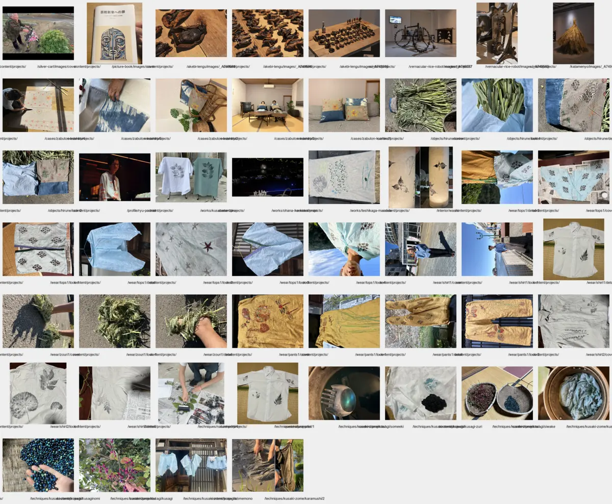
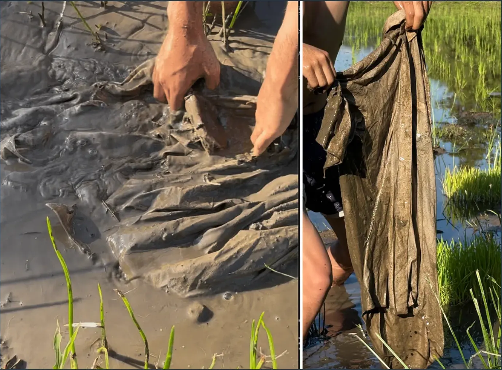

カラムシ染
小院瀬見で採取したカラムシを煮出し、田の泥に含まれる鉄分で媒染した染色実験です。採取から染めまでを同じ土地の素材でつなぎました。

- Year
- 2025年
- Place
- 小院瀬見
- Materials / Method
- カラムシ、布、泥
What I tried
洗ったカラムシを刻んで煮出し、布へ数回に分けて染めを重ねました。泥へ浸す時間と回数によって、黄味からオリーブ色まで発色が変わります。水場の匂いや土の温度を比喩で終わらせず、工程を左右する具体的な条件として記録しています。
